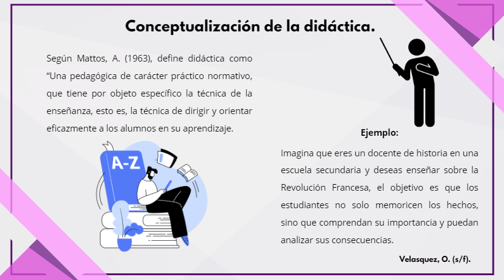
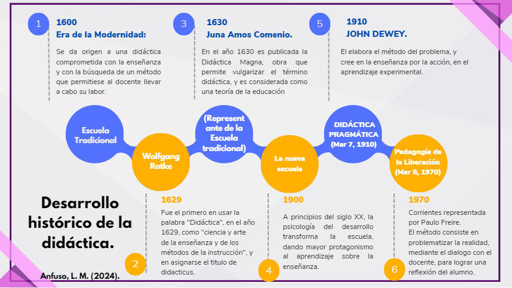
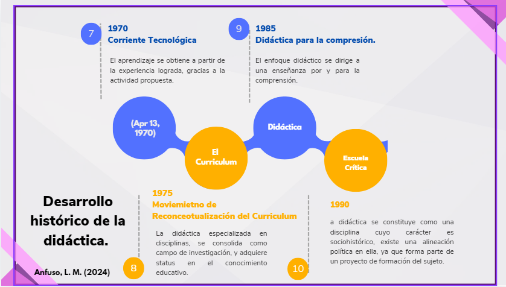
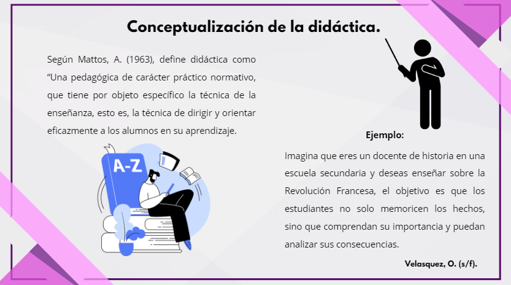
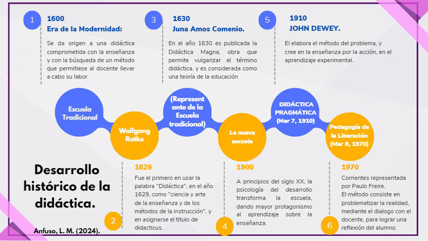
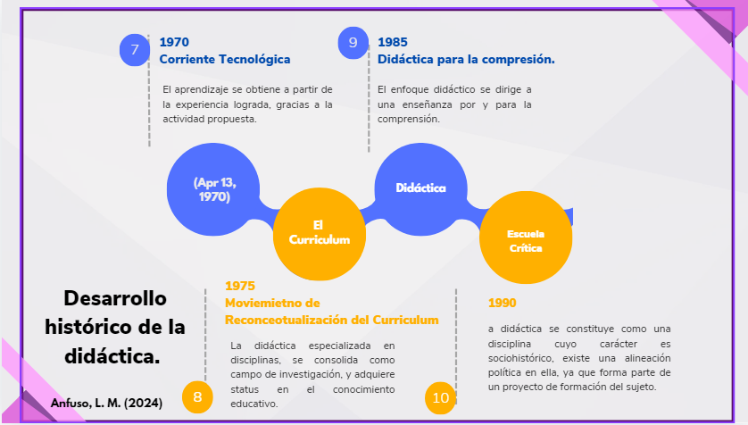

¿Qué es Didactica?

- Mapa conceptual que relaciona los diferentes enfoques de la didáctica a lo largo de la historia.
Enlace: https://n9.cl/8hb0m
- Desarrollo histórico de la didáctica.



Enlace: https://n9.cl/8hb0m


Obra publicada con Licencia Creative Commons Reconocimiento No comercial Compartir igual 3.0